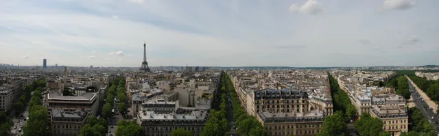
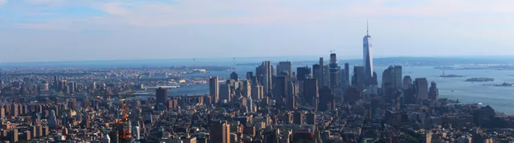

Paris & New York media candidates
INTERNAL REVIEW — no editorial approval recorded. Neither photograph is served by the product. Original aspect ratios are preserved in the prepared WebPs; the proposed hero and card crops below require owner review.
Paris — candidate, not approved
Hero crop

Card crop
Paris
MarcusObal · Wikimedia Commons · CC BY-SA 3.0 · resized to WebP; cropped for display. Individual Commons file · Licence and share-alike terms.
Historical destination photograph, not evidence of current conditions. Panoramic original needs explicit owner approval of card/hero crops. Proposed focal point is unapproved.
New York — candidate, not approved
Hero crop

Card crop
New York
Aaron Harris (Forestikai) · Wikimedia Commons · CC BY-SA 4.0 · resized to WebP; cropped for display. Individual Commons file · Licence and share-alike terms.
Historical destination photograph, not evidence of current conditions. Panoramic original needs explicit owner approval of card/hero crops. Proposed focal point is unapproved.